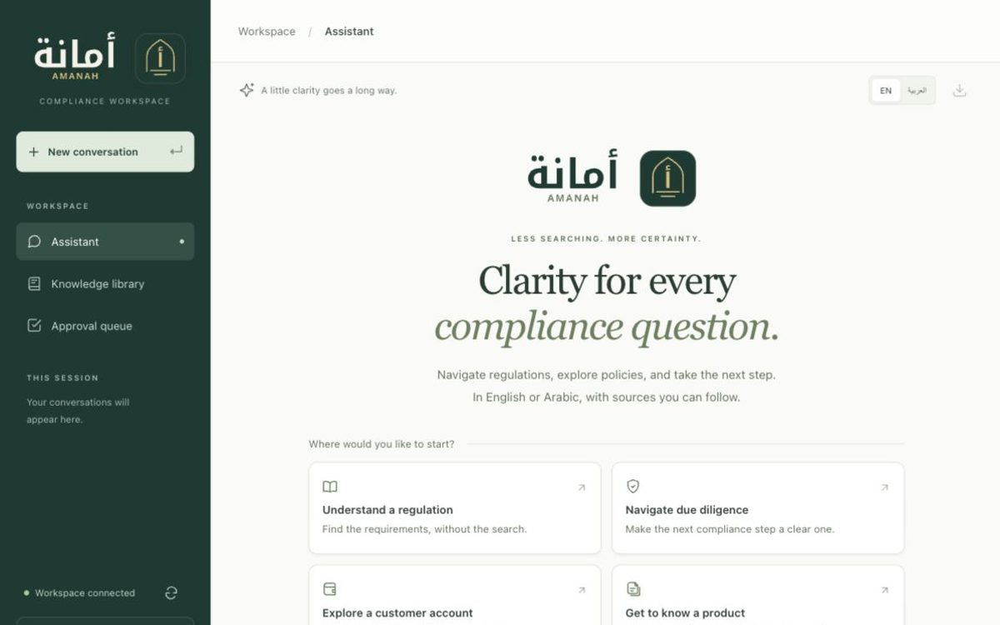

GenAI · GraphRAG · Agents
Amanah — Bilingual compliance assistant
English and Arabic assistant for GCC digital-banking compliance. Hybrid search with re-ranking, a Neo4j knowledge graph that follows cross-referenced articles, LangGraph agents with four-eyes approval, PII redaction and an MCP server. Runs fully local on an 8 GB laptop, with every result measured on a 43-question golden set.
0.81 multi-hop correctness with GraphRAG, vs 0.63 vector-only
Personal project · Repository available on request